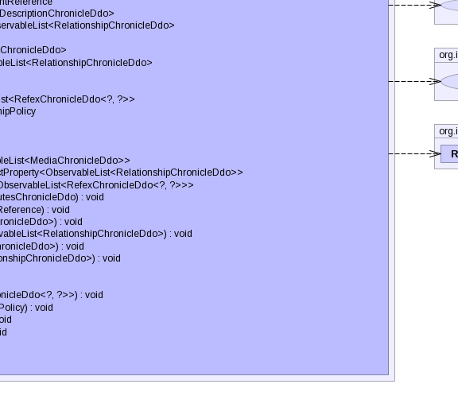

- java.lang.Object
-
- org.ihtsdo.otf.tcc.ddo.concept.ConceptChronicleDdo
-
- All Implemented Interfaces:
- Serializable
public class ConceptChronicleDdo extends Object implements Serializable
Property definition pattern from https://wikis.oracle.com/display/OpenJDK/JavaFX+Property+Architecture using "Basic Lazy With Default Value" example.- Author:
- kec
- See Also:
- Serialized Form
-


 

-
-
Field Summary
Fields Modifier and Type Field and Description protected javafx.collections.ObservableList<DescriptionChronicleDdo>_descriptionsprotected javafx.collections.ObservableList<RelationshipChronicleDdo>_destinationRelationshipsprotected javafx.collections.ObservableList<MediaChronicleDdo>_mediaprotected javafx.collections.ObservableList<RelationshipChronicleDdo>_originRelationshipsprotected javafx.collections.ObservableList<RefexChronicleDdo<?,?>>_refsetMembersprotected ConceptAttributesChronicleDdoconceptAttributesprotected ComponentReferenceconceptReferencestatic StringPADDINGprotected UUIDprimordialUuidstatic longserialVersionUIDprotected UUIDviewCoordinateUuid
-
Constructor Summary
Constructors Constructor and Description ConceptChronicleDdo()ConceptChronicleDdo(TerminologySnapshotDI ss, ConceptChronicleBI c, VersionPolicy versionPolicy, RefexPolicy refexPolicy, RelationshipPolicy relationshipPolicy)
-
Method Summary
-
-
-
Field Detail
-
PADDING
public static final String PADDING
- See Also:
- Constant Field Values
-
serialVersionUID
public static final long serialVersionUID
- See Also:
- Constant Field Values
-
_descriptions
protected javafx.collections.ObservableList<DescriptionChronicleDdo> _descriptions
-
_destinationRelationships
protected javafx.collections.ObservableList<RelationshipChronicleDdo> _destinationRelationships
-
_media
protected javafx.collections.ObservableList<MediaChronicleDdo> _media
-
_originRelationships
protected javafx.collections.ObservableList<RelationshipChronicleDdo> _originRelationships
-
_refsetMembers
protected javafx.collections.ObservableList<RefexChronicleDdo<?,?>> _refsetMembers
-
conceptAttributes
protected ConceptAttributesChronicleDdo conceptAttributes
-
conceptReference
protected ComponentReference conceptReference
-
primordialUuid
protected UUID primordialUuid
-
viewCoordinateUuid
protected UUID viewCoordinateUuid
-
-
Constructor Detail
-
ConceptChronicleDdo
public ConceptChronicleDdo()
-
ConceptChronicleDdo
public ConceptChronicleDdo(TerminologySnapshotDI ss, ConceptChronicleBI c, VersionPolicy versionPolicy, RefexPolicy refexPolicy, RelationshipPolicy relationshipPolicy) throws IOException, ContradictionException
- Throws:
IOExceptionContradictionException
-
-
Method Detail
-
addDestinationRelationships
protected final void addDestinationRelationships(ConceptChronicleBI c, TerminologySnapshotDI ss) throws ContradictionException, IOException
- Throws:
ContradictionExceptionIOException
-
addDestinationTaxonomyRelationships
protected final void addDestinationTaxonomyRelationships(ConceptChronicleBI c, TerminologySnapshotDI ss) throws ContradictionException, IOException
- Throws:
ContradictionExceptionIOException
-
addOriginRelationships
protected final void addOriginRelationships(ConceptChronicleBI c, TerminologySnapshotDI ss) throws ContradictionException, IOException
- Throws:
ContradictionExceptionIOException
-
addOriginTaxonomyRelationships
protected final void addOriginTaxonomyRelationships(ConceptChronicleBI c, TerminologySnapshotDI ss) throws ContradictionException, IOException
- Throws:
ContradictionExceptionIOException
-
convertRefex
public static RefexChronicleDdo<?,?> convertRefex(TerminologySnapshotDI ss, ConceptChronicleDdo concept, RefexChronicleBI<?> m) throws IOException, ContradictionException
- Throws:
IOExceptionContradictionException
-
descriptions
public javafx.beans.property.ObjectProperty<javafx.collections.ObservableList<DescriptionChronicleDdo>> descriptions()
-
destinationRelationships
public javafx.beans.property.SimpleObjectProperty<javafx.collections.ObservableList<RelationshipChronicleDdo>> destinationRelationships()
-
equals
public boolean equals(Object obj)
Compares this object to the specified object. The result is true if and only if the argument is not null, is a EConcept object, and contains the same values, field by field, as this EConcept.
-
hashCode
public int hashCode()
Returns a hash code for thisEConcept.
-
media
public javafx.beans.property.ObjectProperty<javafx.collections.ObservableList<MediaChronicleDdo>> media()
-
originRelationships
public javafx.beans.property.SimpleObjectProperty<javafx.collections.ObservableList<RelationshipChronicleDdo>> originRelationships()
-
refsetMembers
public javafx.beans.property.ObjectProperty<javafx.collections.ObservableList<RefexChronicleDdo<?,?>>> refsetMembers()
-
toHtml
public String toHtml()
-
toString
public String toString()
Returns a string representation of the object.
-
toXml
public String toXml()
-
getConceptAttributes
public ConceptAttributesChronicleDdo getConceptAttributes()
-
getConceptReference
public ComponentReference getConceptReference()
-
getDescriptions
public javafx.collections.ObservableList<DescriptionChronicleDdo> getDescriptions()
-
getDestinationRelationships
public javafx.collections.ObservableList<RelationshipChronicleDdo> getDestinationRelationships()
-
getHtmlFragment
public String getHtmlFragment()
-
getMedia
public javafx.collections.ObservableList<MediaChronicleDdo> getMedia()
-
getOriginRelationships
public javafx.collections.ObservableList<RelationshipChronicleDdo> getOriginRelationships()
-
getPrimordialUuid
public UUID getPrimordialUuid()
-
getRefexPolicy
public RefexPolicy getRefexPolicy()
-
getRefsetMembers
public javafx.collections.ObservableList<RefexChronicleDdo<?,?>> getRefsetMembers()
-
getRelationshipPolicy
public RelationshipPolicy getRelationshipPolicy()
-
getVersionPolicy
public VersionPolicy getVersionPolicy()
-
getViewCoordinateUuid
public UUID getViewCoordinateUuid()
-
setConceptAttributes
public void setConceptAttributes(ConceptAttributesChronicleDdo conceptAttributes)
-
setConceptReference
public void setConceptReference(ComponentReference conceptReference)
-
setDescriptions
public void setDescriptions(List<DescriptionChronicleDdo> descriptions)
-
setDestinationRelationships
public void setDestinationRelationships(javafx.collections.ObservableList<RelationshipChronicleDdo> destinationRelationships)
-
setMedia
public void setMedia(javafx.collections.ObservableList<MediaChronicleDdo> media)
-
setOriginRelationships
public void setOriginRelationships(List<RelationshipChronicleDdo> relationships)
-
setPrimordialUuid
public void setPrimordialUuid(UUID primordialUuid)
-
setRefexPolicy
public void setRefexPolicy(RefexPolicy refexPolicy)
-
setRefsetMembers
public void setRefsetMembers(List<RefexChronicleDdo<?,?>> refsetMembers)
-
setRelationshipPolicy
public void setRelationshipPolicy(RelationshipPolicy relationshipPolicy)
-
setVersionPolicy
public void setVersionPolicy(VersionPolicy versionPolicy)
-
setViewCoordinateUuid
public void setViewCoordinateUuid(UUID viewCoordinateUuid)
-
-